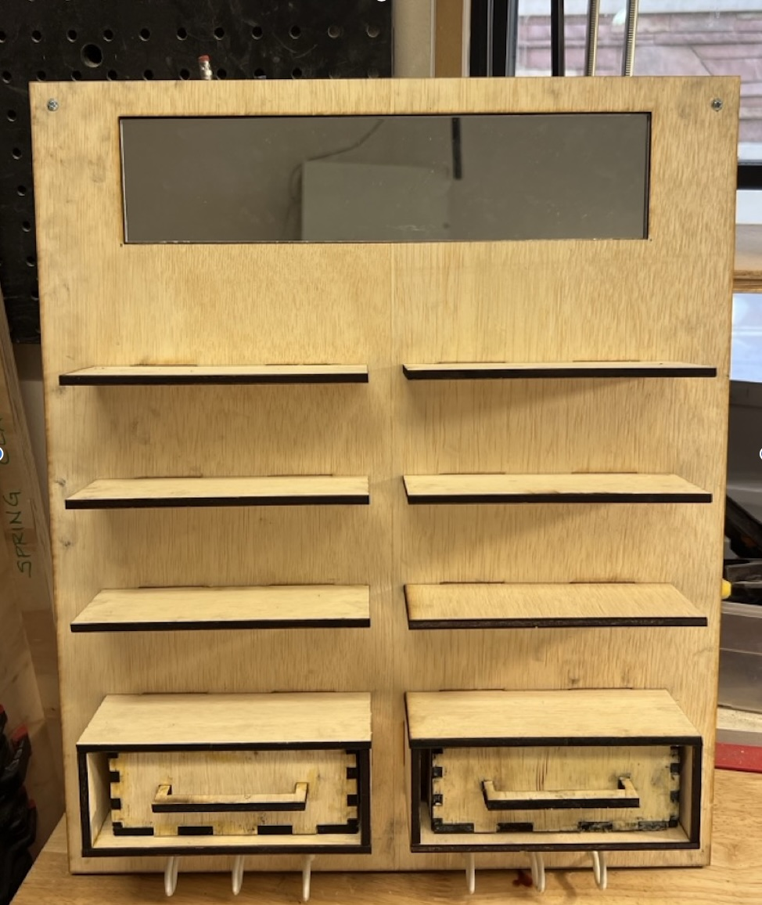
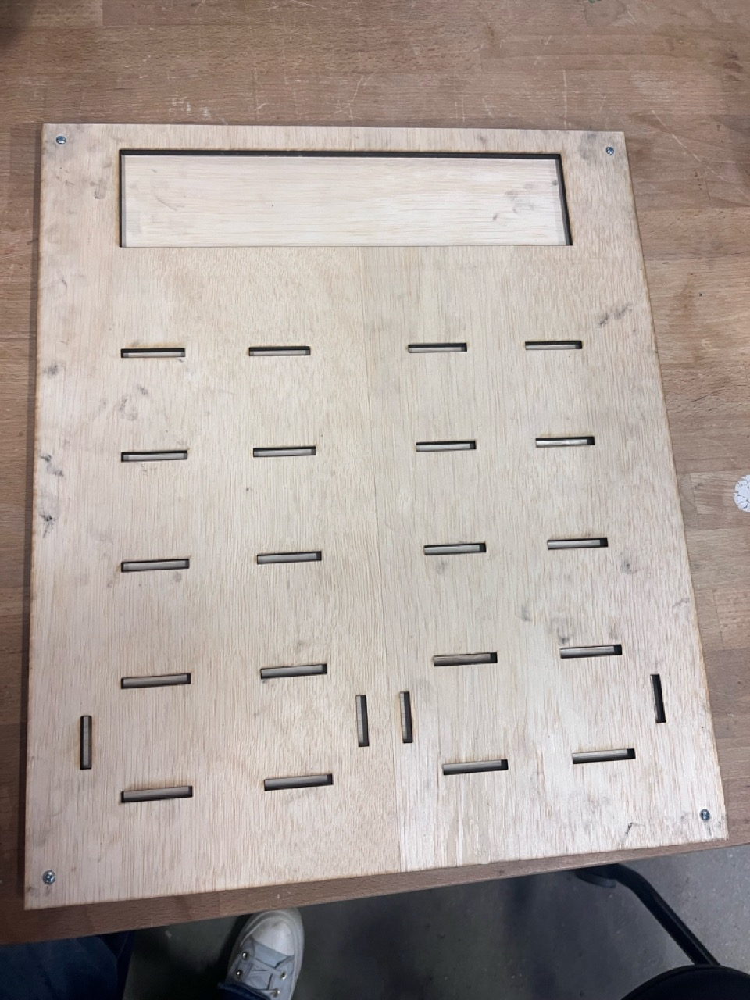
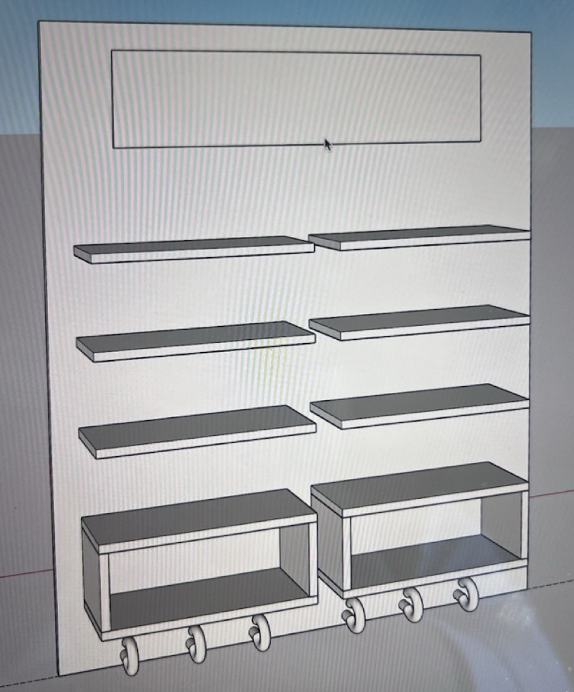
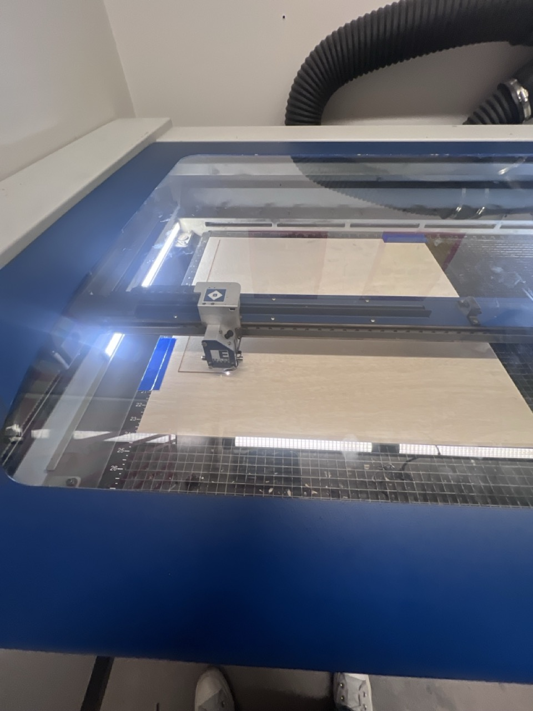
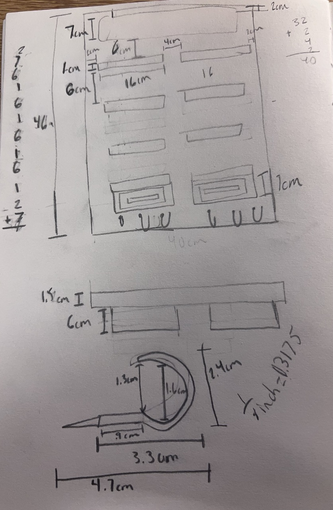
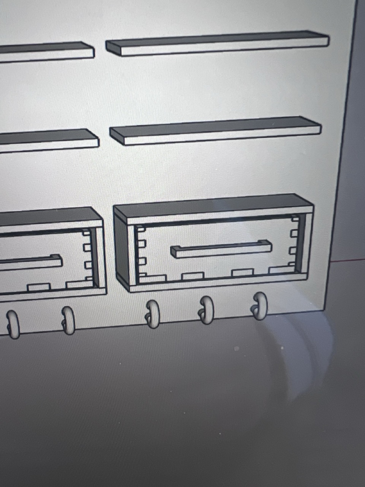
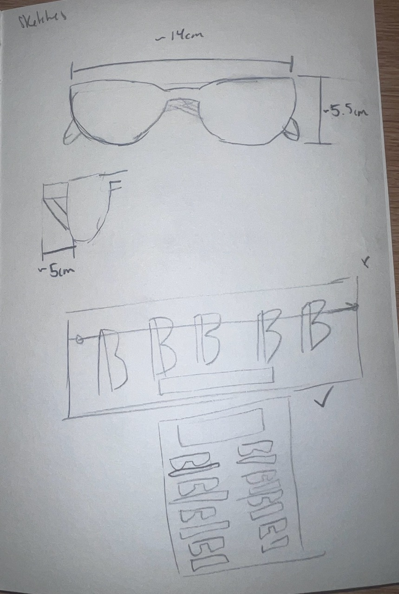

My freshman year I took a class called FORM, a class based around 3D modeling, animation, printing and documentation. For our final project, I chose the prompt, "solve a problem." The problem I had was that I didn't have enough room on my desk for sunglasses. I had too many and no place to put them so, I created an organizer where not only could I shelf my sunglasses but also try them on, hold my keys and other knick knacks. I started the process 3D modeling what my project was and then planning on how I would fabricate it. I chose to laser cut and then use wood glue to connect the shelves and the mirrored acrylic to the baseboard. The baseboard was 3 sheets of wood that I was able to screw together. This project turned out really nice, although I would work through a couple more iterations before I use it. For instance, I would redo some of the shelves and make sure the laser cutter cuts on the first pass.

Laser cut back of ShadeShelf

Full model of the ShadeShelf

ShadeShelf being laser cut

Sketch book layout and measurements

SketchUp model of the Shelf

Inital sketch book ideation